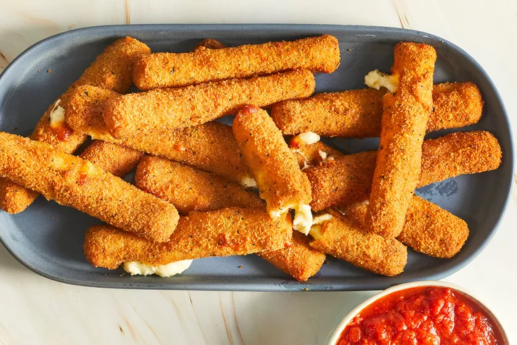

Mozzarella Cheese Sticks

Before making delicious homemade mozzarella cheese sticks you will
first require three separate bowls, a small bowl for mixing eggs and water, a medium bowl
for the bread crumbs and garlic salt, and a third bowl for the flour and cornstarch.
Carful when frying the mozzarella sticks, oil will be hot.
Ingredients
- 2 large eggs, beaten
- ¼ cup water
- 1 ½ cups bread crumbs
- ½ teaspoon garlic salt
- ⅔ cup flour
- ⅓ cup cornstarch
- 1 package mozzarella cheese sticks (16 ounces)
- 2 cups oil for frying
Steps
- Whisk water and eggs together in a small bowl, mix garlic salt and bread crumbs together in a medium bowl,
and mix the flour and cornstarch together in a third bowl.
- In a large saucepan heat the oil to around 365 degrees F or 185 degrees C.
- Next dredge a mozzarella stick in flour, then dip into the egg mixture, make sure to let excess egg
drippings to fall back into bowl. Press mozzarella into bread crumbs, coat evenly and set aside on a plate.
Continue this step individually for all mozzarella sticks.
- Use tongs to lower 3 or 4 mozzarella sticks at time into the hot oil and fry for 30 seconds or until golden brown.
Remove from oil and place on a paper towel. Repeat for all mozzarella sticks, caution mozzarella sticks may be hot.